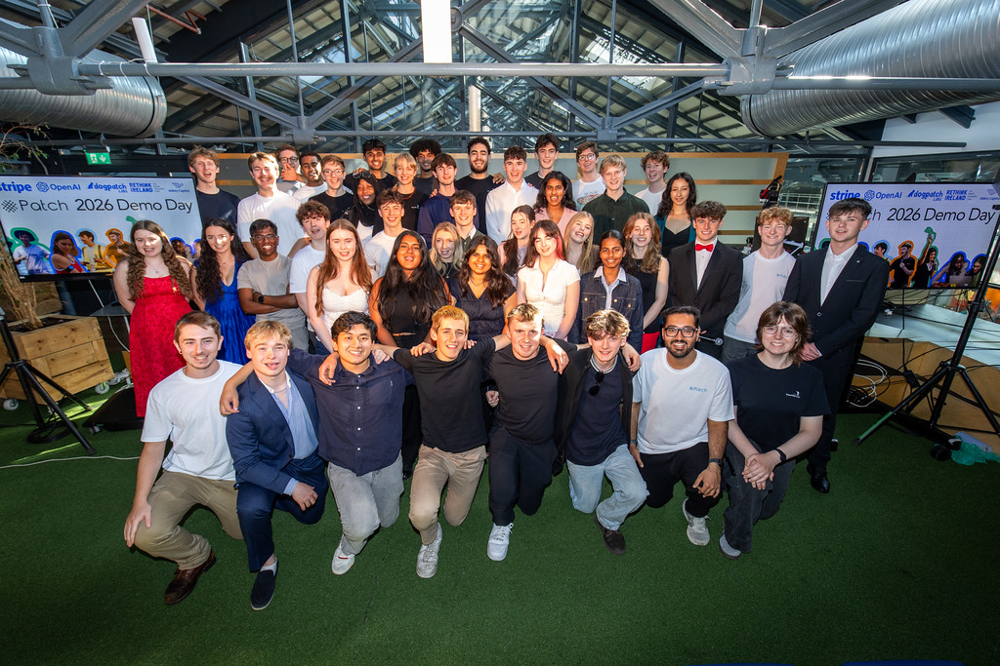
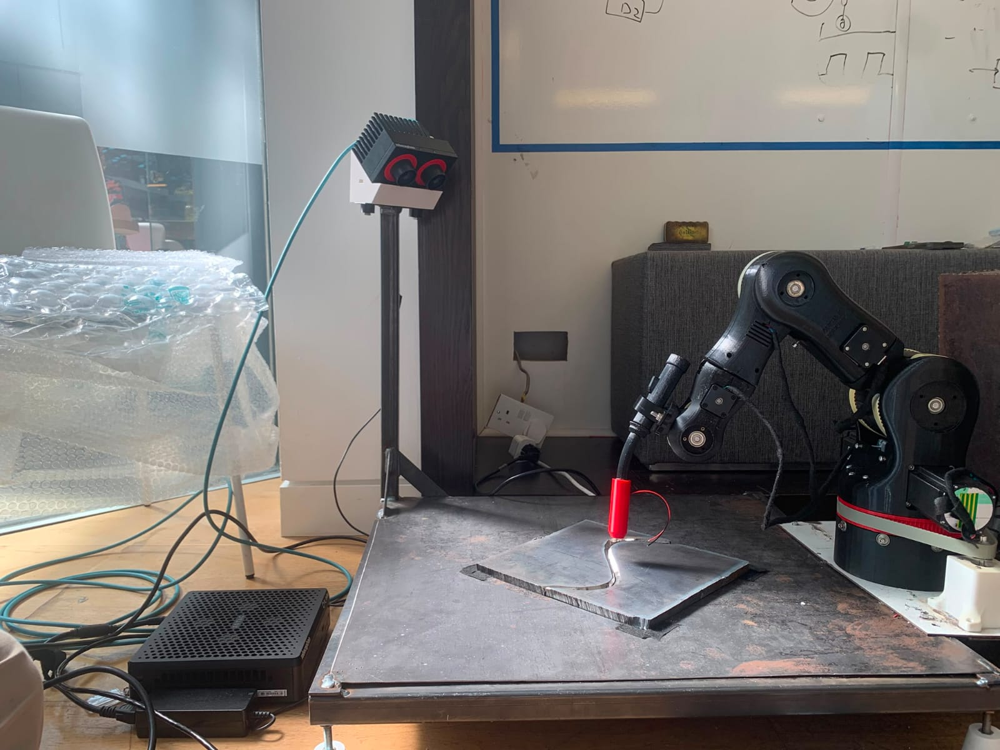
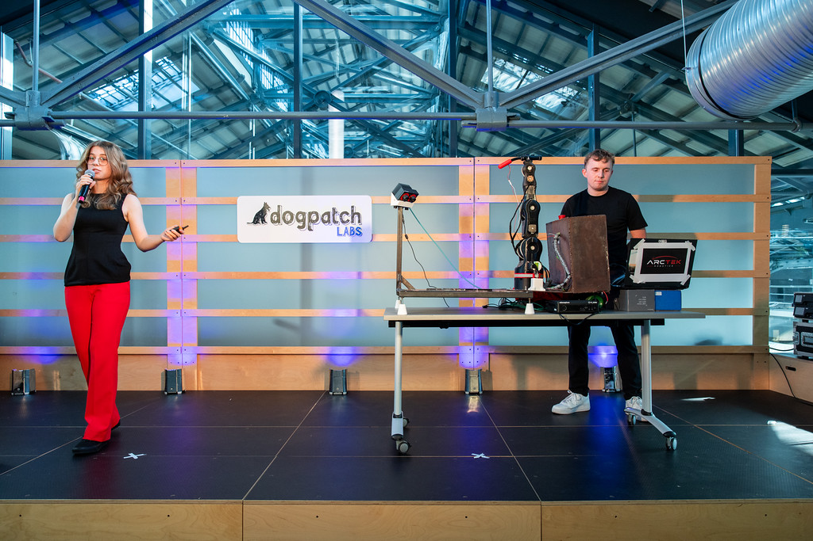
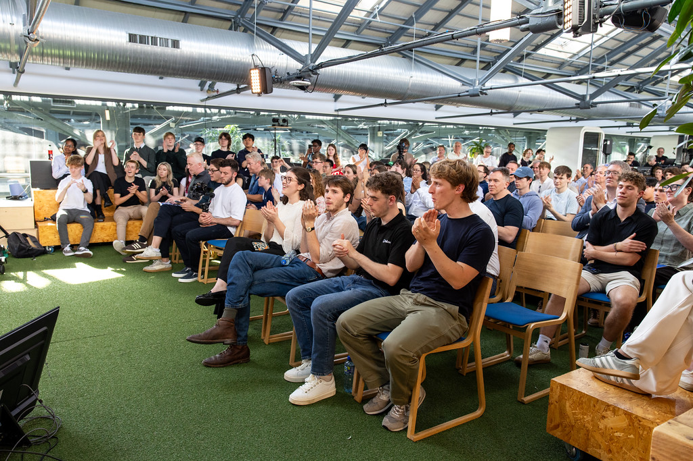
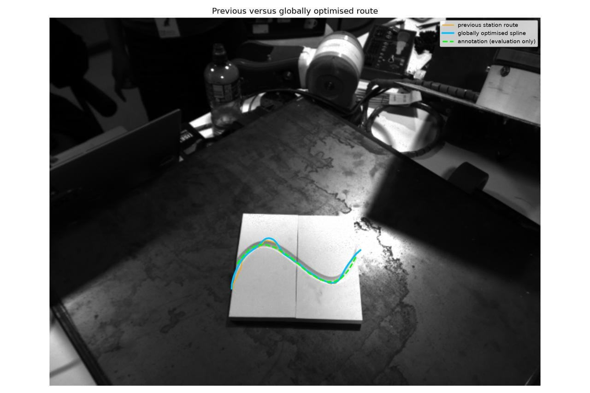
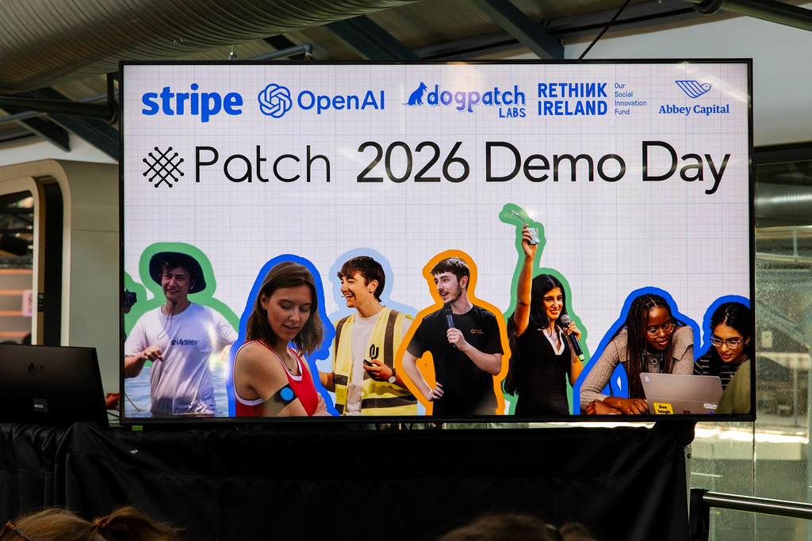
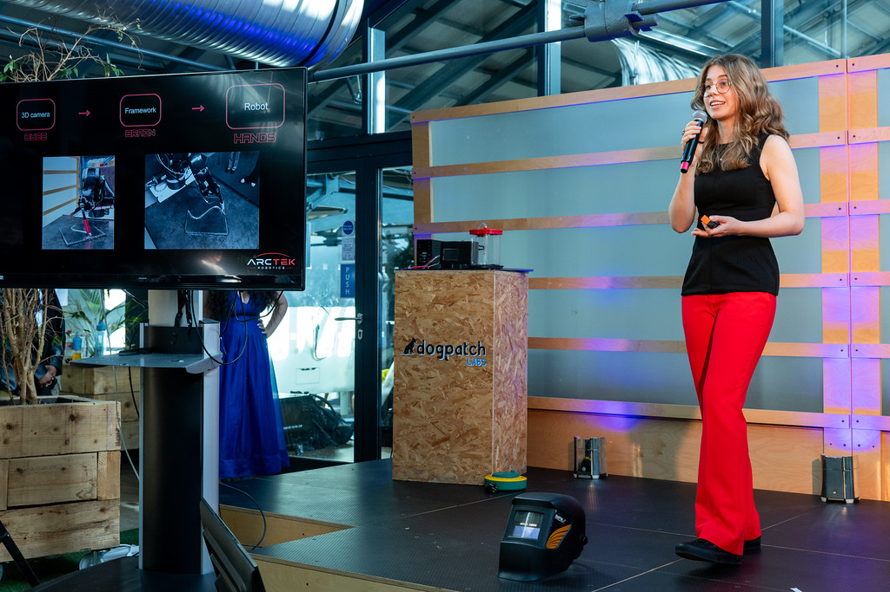

3D vision / Robotics
ArcTek Robotics - 'Patch' Summer Accelerator 2026







01 / 09
Along with 35 other young builders and engineers I was selected for the 'Patch' summer accelerator, backed by OpenAI and Stripe. The goal was to team up and build something we care about in 7 weeks, whether that's a start-up, a non-profit or simply a passion project. Together with my 3 teammates I built a 3D vision-integrated robotics system as a prototype for robotic welding with significantly reduced programming times. My main role was the integration of the 3D stereo camera to provide a point cloud of the part to be welded.